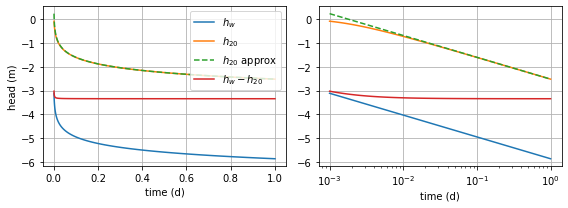
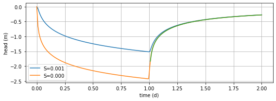
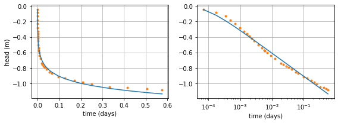
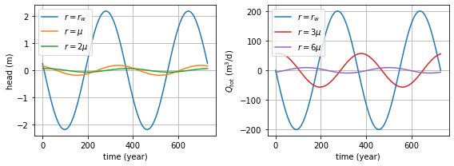
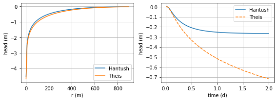
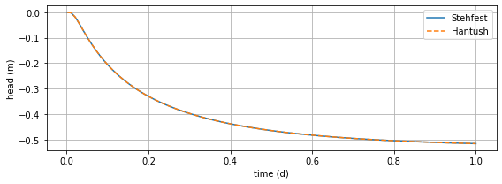
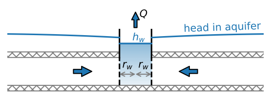
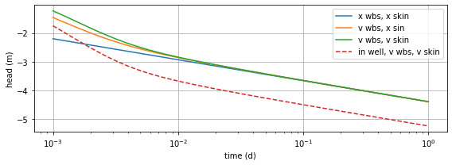
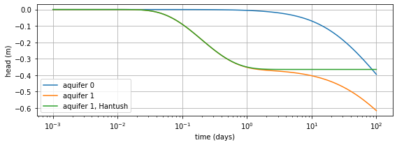

Transient two-dimensional flow
Contents

The Python code provided below is from
Analytical Groundwater Modeling: Theory and Applications Using Python
by Mark Bakker and Vincent Post
ISBN 9781138029392
The book is published by CRC press and is available here.
This Notebook is provided under the MIT license.
© 2022 Mark Bakker and Vincent Post
Transient two-dimensional flow#
%matplotlib inline
import numpy as np
import matplotlib.pyplot as plt
plt.rcParams["figure.figsize"] = (8, 3) # set default figure size
plt.rcParams["contour.negative_linestyle"] = 'solid' # set default line style
plt.rcParams["figure.autolayout"] = True # same at tight_layout after every plot
Wells in confined and unconfined aquifers#
# parameters
T = 200 # transmissivity, m^2/d
S = 2E-3 # storage coefficient, -
rw = 0.3 # radius of well, m
Q = 1000 # discharge of well, m^3/d
t0 = 0 # start of pumping, d
# solution
from scipy.special import exp1
def htheis(r, t, T, S, Q, t0=0):
return -Q / (4 * np.pi * T) * exp1(S * r ** 2 / (4 * T * (t - t0)))
t = np.logspace(-3, 0, 100)
hw = htheis(rw, t, T, S, Q, t0)
h20 = htheis(20, t, T, S, Q, t0)
h20approx = Q / (4 * np.pi * T) * (np.euler_gamma +
np.log(S * 20 ** 2 / (4 * T * (t - t0))))
---------------------------------------------------------------------------
ModuleNotFoundError Traceback (most recent call last)
Input In [3], in <cell line: 2>()
1 # solution
----> 2 from scipy.special import exp1
3 def htheis(r, t, T, S, Q, t0=0):
4 return -Q / (4 * np.pi * T) * exp1(S * r ** 2 / (4 * T * (t - t0)))
ModuleNotFoundError: No module named 'scipy'
# basic plot
plt.subplot(121)
plt.plot(t, hw, label='$h_w$')
plt.plot(t, h20, label='$h_{20}$')
plt.plot(t, h20approx, '--', label='$h_{20}$ approx')
plt.plot(t, hw - h20, label='$h_w - h_{20}$')
plt.xlabel('time (d)')
plt.ylabel('head (m)')
plt.grid()
plt.legend()
plt.subplot(122)
plt.semilogx(t, hw)
plt.semilogx(t, h20)
plt.semilogx(t, h20approx, '--')
plt.semilogx(t, hw - h20)
plt.xlabel('time (d)')
plt.grid();

# parameters
t0 = 0 # time pump starts, d
t1 = 1 # time pump is turned off, d
S = [1E-3, 1E-4] # storage coefficients, -
r = 100 # m
# solution
t = np.linspace(1e-6, 2, 200)
h = np.zeros((2, len(t)))
for i in range(2):
h[i] = -Q / (4 * np.pi * T) * exp1(S[i] * r ** 2 / (4 * T * (t - t0)))
h[i, t > t1] -= -Q / (4 * np.pi * T) * exp1(
S[i] * r ** 2 / (4 * T * (t[t > t1] - t1)))
tapprox = np.linspace(t1 + 0.01, 2, 100)
happrox = Q / (4 * np.pi * T) * np.log((tapprox - t1) / (tapprox - t0))
# basic plot
plt.plot(t, h[0], label=f'S={S[0]:.3f}')
plt.plot(t, h[1], label=f'S={S[1]:.3f}')
plt.plot(tapprox, happrox)
plt.xlabel('time (d)')
plt.ylabel('head (m)')
plt.legend()
plt.grid();

# Data at Oude Korendijk taken from Kruseman and de Ridder (1990)
robs = 30 # distance to of observation well, m
Q = 788 # discharge of well, m^3/d
time = np.array(
[0.1 , 0.25, 0.5 , 0.7 , 1. , 1.4 , 1.9 , 2.33, 2.8 ,
3.36, 4. , 5.35, 6.8 , 8.3 , 8.7 , 10. , 13.1 , 18. ,
27. , 33. , 41. , 48. , 59. , 80. , 95. , 139. , 181. ,
245., 300., 360., 480., 600., 728., 830.]) # in minutes
drawdown = np.array(
[0.04 , 0.08 , 0.13 , 0.18 , 0.23 , 0.28 , 0.33 , 0.36 , 0.39 ,
0.42 , 0.45 , 0.5 , 0.54 , 0.57 , 0.58 , 0.6 , 0.64 , 0.68 ,
0.742, 0.753, 0.779, 0.793, 0.819, 0.855, 0.873, 0.915, 0.935,
0.966, 0.99 , 1.007, 1.05 , 1.053, 1.072, 1.088]) # in meters
tobs = time / 24 / 60 # convert observation time to days
hobs = -drawdown # convert drawdown to heads
def fobj(p, ho, to, ro, Q, return_heads=False):
T, S = p
hm = htheis(ro, to, T, S, Q)
if return_heads:
return hm
rv = np.sum((ho - hm) ** 2)
return rv
# least squares solution
from scipy.optimize import fmin
T, S = fmin(fobj, [100, 1e-4], args=(hobs, tobs, robs, Q), disp=0)
print(f'Estimated parameters T: {T:.2f} m^2/d, S: {S:.2e}')
hm = fobj([T, S], hobs, tobs, robs, Q, return_heads=1) # compute modeled heads
rmse = np.sqrt(np.mean((hobs - hm) ** 2))
print(f'Root mean squared error: {rmse:.3f} m')
Estimated parameters T: 480.47 m^2/d, S: 1.13e-04
Root mean squared error: 0.032 m
# basic plot
plt.subplot(121)
plt.plot(tobs, hobs, 'C1.')
plt.plot(tobs, hm, 'C0')
plt.xlabel('time (days)')
plt.ylabel('head (m)')
plt.grid()
plt.subplot(122)
plt.semilogx(tobs, hobs, 'C1.')
plt.semilogx(tobs, hm, 'C0')
plt.xlabel('time (days)')
plt.grid();

A well with a periodic discharge#
# parameters
T = 100 # transmissivity, m^2/d
S = 1e-1 # storage coefficient, -
tau = 365 # period, d
A = 200 # amplitude of discharge function, m^3/d
rw = 0.3 # radius of well, m
mu = np.sqrt(T * tau / (S * 2 * np.pi))
print(f'characteristic length mu: {mu:.2f} m')
characteristic length mu: 241.02 m
# solution
from scipy.special import kv
def hsinwell(r, t):
hcomplex = -A / (2 * np.pi * T) * kv(0, r * np.sqrt(1j) / mu) * \
np.exp(2 * np.pi * 1j * t / tau)
return hcomplex.imag
def Qrsinwell(r, t):
Qrcomplex = -A / (2 * np.pi) * np.sqrt(1j) / mu * \
kv(1, r * np.sqrt(1j) / mu) * np.exp(2 * np.pi * 1j * t / tau)
return Qrcomplex.imag
# basic plot
t = np.linspace(0, 2 * tau, 100)
plt.subplot(121)
plt.plot(t, hsinwell(rw, t), label='$r=r_w$')
plt.plot(t, hsinwell(mu, t), label='$r=\mu$')
plt.plot(t, hsinwell(2 * mu, t), label='$r=2\mu$')
plt.xlabel('time (year)')
plt.ylabel('head (m)')
plt.grid()
plt.legend()
plt.subplot(122)
plt.plot(t, Qrsinwell(rw, t) * 2 * np.pi * rw, label='$r=r_w$')
plt.plot(t, Qrsinwell(3 * mu, t) * 2 * np.pi * 3 * mu, 'C3', label='$r=3\mu$')
plt.plot(t, Qrsinwell(6 * mu, t) * 2 * np.pi * 6 * mu, 'C4', label='$r=6\mu$')
plt.xlabel('time (year)')
plt.ylabel('$Q_{tot}$ (m$^3$/d)')
plt.legend()
plt.grid();

Wells in a semi-confined aquifer#
# parameters
T = 200 # transmissivity of aquifer, m^2/d
S = 0.0005 # storage coefficient of aquifer, -
c = 1000 # resistance of leaky layer, d
Q = 800 # discharge of well, m^3/d
rw = 0.3 # radius of well, m
lab = np.sqrt(c * T) # leakage factor, m
print(f'leakage factor: {lab:.2f} m')
leakage factor: 447.21 m
# solution
from scipy.integrate import quad
def integrand(tau, r, T, lab):
return 1 / tau * np.exp(-tau - r ** 2 / (4 * lab ** 2 * tau))
def hantush(r, t, T, S, c, Q):
lab = np.sqrt(T * c)
u = S * r ** 2 / (4 * T * t)
F = quad(integrand, u, np.inf, args=(r, T, lab))[0]
return -Q / (4 * np.pi * T) * F
hantushvec = np.vectorize(hantush) # vectorized version of hantush function
# basic plot for one value of r and one value of t
plt.subplot(121)
r = np.linspace(rw, 2 * lab, 100)
t = 6 / 24
plt.plot(r, hantushvec(r, t, T, S, c, Q), label='Hantush')
plt.plot(r, htheis(r, t, T, S, Q), label='Theis') # theis func from Section 9.1
plt.xlabel('r (m)')
plt.ylabel('head (m)')
plt.legend()
plt.grid()
plt.subplot(122)
t = np.linspace(0.01, 2, 100)
r = lab # evaluate head at r=lambda
plt.plot(t, hantushvec(r, t, T, S, c, Q), label='Hantush')
plt.plot(t, htheis(r, t, T, S, Q), '--', label='Theis')
plt.xlabel('time (d)')
plt.ylabel('head (m)')
plt.legend()
plt.grid();

from scipy.special import factorial as fac
def stehfest_coef(M): # from Chapter 5
assert M % 2 == 0, 'M must be even'
M2 = int(M / 2)
V = np.zeros(M)
for k in range(1, M + 1):
z = np.zeros(min(k, M2) + 1)
for j in range(int((k + 1) / 2), min(k, M2) + 1):
z[j] = j ** M2 * fac(2 * j) / \
(fac(M2 - j) * fac(j) * fac(j - 1) * fac(k - j) * fac(2 * j - k))
V[k - 1] = (-1) ** (k + M2) * np.sum(z)
return V
def stehfest(x, t, func, M=12, **kwargs): # from Chapter 5
t = np.atleast_1d(t)
x = np.atleast_1d(x)
f = np.zeros((len(x), len(t)))
V = stehfest_coef(M)
for i in range(len(t)):
p = np.arange(1, M + 1) * np.log(2) / t[i]
for j in range(len(x)):
fbar = func(p, x[j], **kwargs)
f[j, i] = np.log(2) / t[i] * np.sum(V * fbar)
return f
# Laplace transform solution
from scipy.special import k0
def hbar(p, r, T, S, c, Q):
w = (S * c * p + 1) / (c * T)
return -Q / (2 * np.pi * T * p) * k0(r * np.sqrt(w))
t = np.linspace(1e-3, 1, 100)
h = stehfest(250, t, hbar, T=T, S=S, c=c, Q=Q) # stehfest func from Section 5.5
h_hantush = hantushvec(250, t, T, S, c, Q)
# basic plot
plt.plot(t, h[0], label='Stehfest')
plt.plot(t, h_hantush, '--', label='Hantush')
plt.xlabel('time (d)')
plt.ylabel('head (m)')
plt.legend()
plt.grid();

Wells with wellbore storage and skin effect#
# parameters
T = 200 # transmissivity, m^2/d
S = 0.005 # storage coefficient of aquifer, -
H = 10 # aquifer thickness, m
Q = 800 # discharge of well, m^3/d
rw = 0.3 # well radius, m
cw = 0.02 # resistance of well screen, d
# solution
from scipy.special import k0, k1
def hbar_wbs_res(p, r, T, S, Q, rw, cw, H): # hbar
sqrtw = np.sqrt(S * p / T)
Aw = np.pi * rw ** 2
B = -Q / p * 1 / (p * Aw * k0(rw * sqrtw) +
(2 * np.pi * rw + Aw * p * cw / H) *
T * sqrtw * k1(rw * sqrtw))
hbar = B * k0(r * sqrtw)
return hbar
def Qrbar_wbs_res(p, r, T, S, Q, rw, cw, H): # Qrbar
sqrtw = np.sqrt(S * p / T)
Aw = np.pi * rw ** 2
B = -Q / p * 1 / (p * Aw * k0(rw * sqrtw) +
(2 * np.pi * rw + Aw * p * cw / H) *
T * sqrtw * k1(rw * sqrtw))
Qrbar = T * sqrtw * B * k1(r * sqrtw)
return Qrbar
def hwbar_wbs_res(p, r, T, S, Q, rw, cw, H): # hbar inside well
# r is not used, but Stehfest routine requires it
hrw = hbar_wbs_res(p, rw, T, S, Q, rw, cw, H)
Qrw = Qrbar_wbs_res(p, rw, T, S, Q, rw, cw, H)
return cw * Qrw / H + hrw
# import stehfest_coef and stehfest from Section 5.4
t = np.logspace(-3, 0, 100)
ht = htheis(rw, t, T, S, Q) # function from Section 9.1
hw = stehfest(0, t, hwbar_wbs_res, T=T, S=S, Q=Q, rw=rw, cw=cw, H=H)
hwbs = stehfest(rw, t, hbar_wbs_res, T=T, S=S, Q=Q, rw=rw, cw=0, H=H)
hwbsres = stehfest(rw, t, hbar_wbs_res, T=T, S=S, Q=Q, rw=rw, cw=cw, H=H)
# plot of head at well
plt.semilogx(t, ht, label='x wbs, x skin')
plt.semilogx(t, hwbs[0], label=f'v wbs, x sin')
plt.semilogx(t, hwbsres[0], label=f'v wbs, v skin')
plt.semilogx(t, hw[0], '--', label=f'in well, v wbs, v skin')
plt.xlabel('time (d)')
plt.ylabel('head (m)')
plt.legend()
plt.grid();

Wells in a two-aquifer system#
# parameters
T0 = 100 # transmissivity top aquifer, m^2/d
S0 = 0.1 # specific yield top aquifer, -
T1 = 200 # transmissivity bottom aquifer, m^2/d
S1 = 0.001 # storage coefficient bottom aquifer, -
c = 500 # resistance of leaky layer, d
Q = 800 # discharge of well, m^3/d
rw = 0.3 # radius of well, m
# solution
from scipy.special import k0
def hmaqbar(plist, r, layer):
hbar = np.zeros(len(plist))
for i, p in enumerate(plist):
A = np.array([[(p * c * S0 + 1) / (c * T0), -1 / (c * T0)],
[-1 / (c * T1), (p * c * S1 + 1) / (c * T1)]])
w, v = np.linalg.eig(A)
b = np.linalg.solve(v, [0, 1])
hbar[i] = -Q / (2 * np.pi * T1 * p) * (
b[0] * v[layer, 0] * k0(r * np.sqrt(w[0])) +
b[1] * v[layer, 1] * k0(r * np.sqrt(w[1])))
return hbar
r = 250
t = np.logspace(-3, 2, 100)
h0 = stehfest(r, t, hmaqbar, layer=0) # stehfest function from Section 5.5
h1 = stehfest(r, t, hmaqbar, layer=1)
h1_hantush = hantushvec(r, t, T1, S1, c, Q) # hantushvec from Section 9.3
# basic plot semilog
plt.semilogx(t, h0[0], label='aquifer 0')
plt.semilogx(t, h1[0], label='aquifer 1')
plt.semilogx(t, h1_hantush, label='aquifer 1, Hantush')
plt.xlabel('time (days)')
plt.ylabel('head (m)')
plt.legend()
plt.grid();
